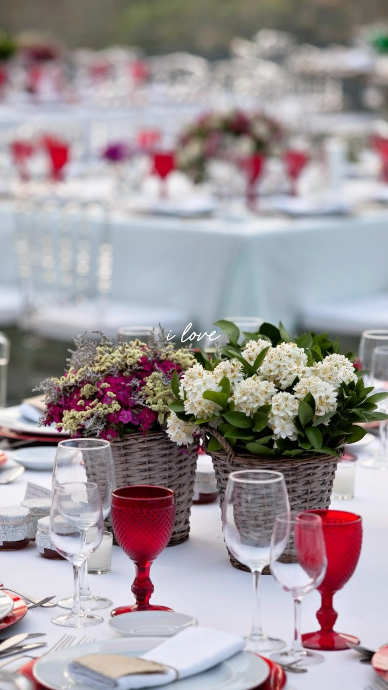
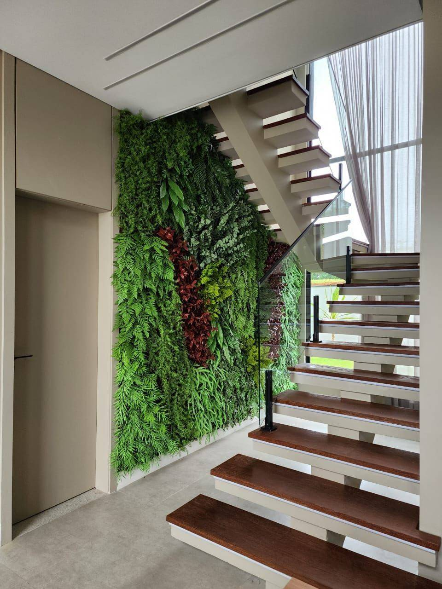
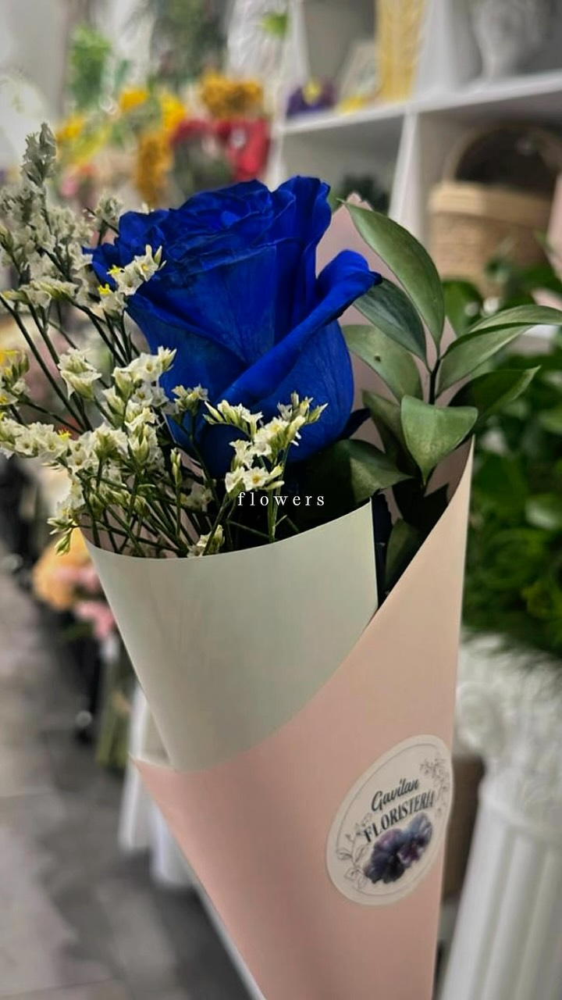
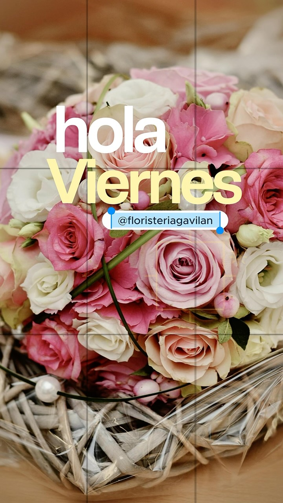
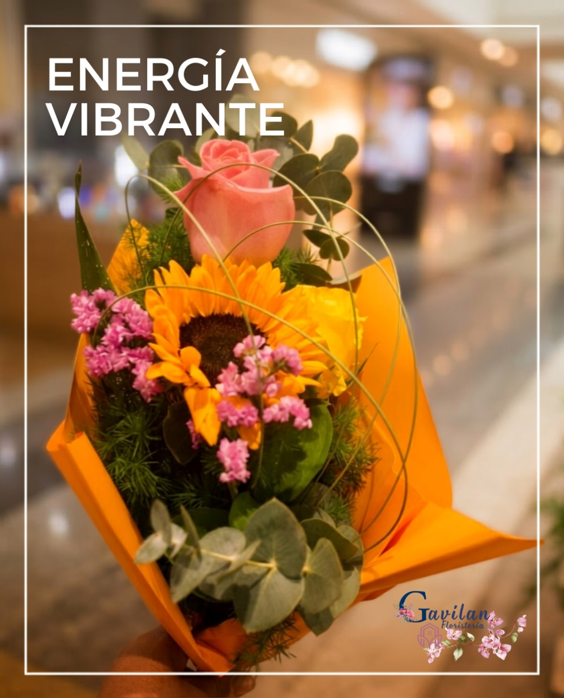
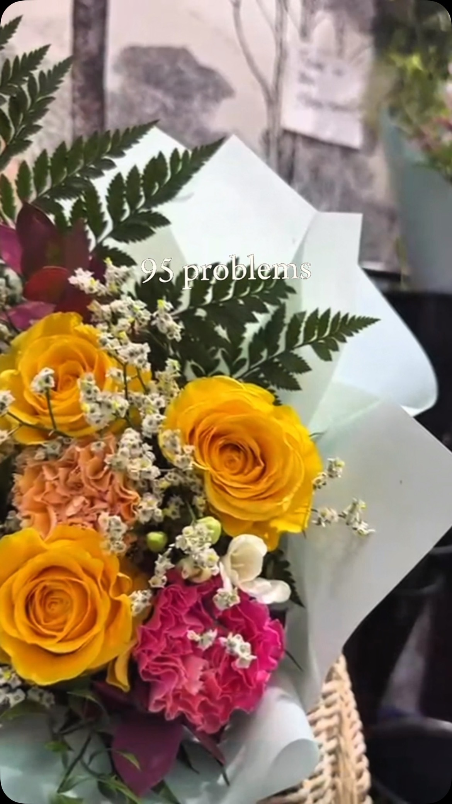

Bodas
Diseñamos la decoración floral de vuestro gran día, desde el ramo de novia hasta la ceremonia y el banquete.
Descubrir
Floristería en Príncipe Pío · Madrid
Ramos personalizados, decoración floral, plantas y bodas en Madrid. Encarga tu ramo o cuéntanos tu idea por WhatsApp.
¿Qué necesitas?

Gavilán Green Spaces
En Floristería Gavilán, Ros'ana Silva transforma flores, plantas y espacios en experiencias únicas. Desde nuestra floristería en C.C. Príncipe Pío, diseñamos cada composición de manera personalizada, cuidando cada detalle para conseguir ambientes llenos de personalidad, elegancia y emoción.
Lo que hacemos
Diseñamos la decoración floral de vuestro gran día, desde el ramo de novia hasta la ceremonia y el banquete.
DescubrirCreamos composiciones y ambientes florales para eventos, celebraciones y ocasiones especiales.
Consultar disponibilidad
Ramos diseñados especialmente para cada persona, ocasión y estilo: regalos, aniversarios, celebraciones o un gesto inesperado.
Ver ramosTransformamos espacios mediante composiciones florales, centros de mesa, arcos y elementos decorativos.
ConsultarCatálogo floral
Escoge un estilo, tamaño y presupuesto. Te confirmamos disponibilidad por WhatsApp y preparamos una composición personalizada.

Rosas, tonos pastel y flores delicadas para aniversarios, cumpleaños o detalles especiales.

Girasoles, verdes y flores luminosas para transmitir alegría, fuerza y vitalidad.
Composiciones con una flor protagonista para regalos con personalidad y un punto diferente.

Una composición cuidada para ocasiones especiales, con flores seleccionadas y presencia premium.
Diseños personalizados según vestido, estilo de boda, paleta de color y temporada.
Flores frescas de temporada y verdes naturales, pensadas según el momento y la disponibilidad.
Los precios pueden variar según tamaño, temporada y flores disponibles. Te confirmamos la propuesta antes de prepararla.
Regalos
Dinos para quién es, la ocasión y cuánto quieres gastar. Nosotros elegimos las flores y preparamos un ramo con intención.
Encontrar mi ramoBodas y eventos
Cada boda es diferente. Por eso creamos una decoración floral completamente personalizada que refleje vuestra personalidad, vuestro estilo y la esencia de vuestro día.
Trabajos reales de Gavilán
Proceso
Cuéntanos tu idea
Diseñamos tu propuesta
Elegimos flores y materiales
Creamos cada detalle
Hacemos realidad tu evento
Cada flor tiene su momento.
Nosotros hacemos que sea inolvidable.
Confianza
“Nos ayudaron a elegir un ramo precioso y lo prepararon con muchísimo gusto. Se nota el cariño en cada detalle.”
Cliente de tienda“La decoración floral quedó elegante y natural. Entendieron la idea desde el primer momento.”
Evento privado“Muy buena atención, flores frescas y composiciones diferentes. Volveré para próximos regalos.”
Cliente habitualDescubre nuestros últimos trabajos, arreglos florales, plantas, inspiración y proyectos desde Gavilán Green Spaces.
Contacto
Estamos en el Centro Comercial Príncipe Pío. Para ramos, plantas, regalos o eventos, lo más rápido es contarnos tu idea por WhatsApp.
Centro Comercial Príncipe Pío, Local D1.
Consulta disponibilidad y horario actualizado por WhatsApp.
Ramos, plantas, regalos, bodas y eventos.